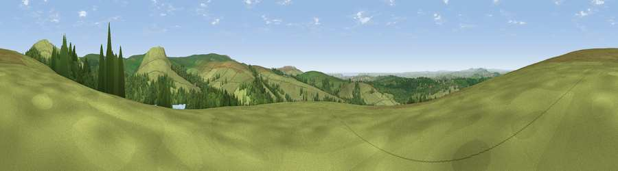

Viewpoint near Dousland
#5837 in England · top 11% of its area beats it · near Dousland · open accessWhere it is
The exact computed spot (SX 54862 68238). Click the marker for map links.
Public access: this spot lies on mapped open-access land (CRoW Act 2000) — you may roam here on foot. Computed from Natural England's CRoW access layer and OpenStreetMap rights of way — not the legal definitive map. Always verify locally.
The view, rendered

A 360° render of this exact spot computed from the terrain model, tree cover and land cover — summer colours, afternoon light, calibrated against photographs of famous viewpoints. Real trees, hedges and buildings will differ in detail.
The panorama
Grey silhouette: terrain skyline in each direction (720 bearings, Earth curvature and refraction included). Dashed green: skyline with trees (+15 m) and buildings (+8 m) as obstacles. Blue strip: how far the ground is visible on each bearing.
Where the view opens
Wedge length = distance to the farthest visible ground on that bearing (vegetation-aware). Rings at 10, 25 and 50 km.
What fills the view
49% grassland · 33% woodland · 18% water ·
Angular shares of the visible panorama (visual magnitude), not map area. Landscape diversity 0.47 (0–1 Shannon).
Key numbers
More beautiful places nearby
The staircase of upgrades: each row has a higher view potential than everything closer. Driving times are estimates from straight-line distance, calibrated against real road routing — check an actual route before setting out.
| Place | Direction | Drive | Score |
|---|---|---|---|
| Sheeps Tor | E · 2 km | ~5 min | 78.0 |
| Viewpoint near Dousland | NNE · 2 km | ~5 min | 81.0 |
| Viewpoint near Lee Moor | SSE · 5 km | ~12 min | 82.7 |
| Viewpoint near Downderry | SW · 25 km | ~41 min | 83.5 |
| Viewpoint near Hope | SSE · 32 km | ~50 min | 84.4 |
| Viewpoint near East Prawle | SE · 39 km | ~58 min | 84.6 |
| Pencarrow Head | WSW · 43 km | ~63 min | 86.0 |
| Viewpoint near Lesnewth | WNW · 49 km | ~70 min | 87.7 |
50.49591, -4.04767 · source: screening · position refined by local search. Computed location — check access rights before visiting.